Can a demand network that reads no lagged power, fine-tuned every week with a recency weight, get close to K2-S1 on ordinary rows and avoid the load-shift problem?
Correction (2026-11-04). The gap to K2-S1 above 24 h of lead on this page is voided. K2-S1 mixes in experiment 404's lag-free head, which took its weather from the freshest run at each target's valid time (leads of 9 to 33 h at every horizon), a look-ahead that a forecast made at the origin does not have. The gap at 0 to 24 h is unchanged, and comparisons that do not involve K2-S1 are unaffected. The rebuilt K2-S1 will restate the gaps. Evidence: experiments 531 and 532.
A lag-free demand neural network that is refitted every week scored 0.17 to 0.19 points of continuous ranked probability score (CRPS) better than one refitted every month (a lower score is better). A 90-day recency weight added a further 0.07 to 0.08 points. The best lag-free arm, L-Ww, stayed 0.13 to 0.16 points behind K2-S1, the demand network of experiment 470 that reads lagged power. The 90-day weight made the next week's forecast follow an injected load shift (a sudden, lasting change in a substation's demand) more closely. Neither dropping labelled events nor adding a latent outlier component reduced how much of the injected shift leaked into the next week's forecast. In the Christmas week of 2025 (both groups) and the last week of January 2026 (the six only), L-Ww scored better than K2-S1, so the gap to K2-S1 is not uniform.
We asked whether a network that reads no lagged power can come close to K2-S1 by being fine-tuned more often. The lag-free neural network is pretrained on ERA5 and CAMS estimates of past weather (reanalysis datasets), then fine-tuned on archived ECMWF ensemble (ENS) forecasts. We compared a monthly refit with a weekly refit, and a 182.6-day with a 90-day recency half-life. We also tried two ways to make the fine-tune ignore load-shift events, and injected a shift into the training targets to measure how much of it the next week's forecast absorbs. All arms are scored on the half-hours of experiment 470's row set, over five months, in points of effective capacity (a percentage of each Primary's capacity). "The eight" are the eight Primaries that report only apparent power; "the six" are the six that report signed megawatts. Headline scores use rows with no labelled event.
| Arm | What it is |
|---|---|
| L-M | Lag-free network, refitted monthly, 182.6-day half-life weight (experiment 425's recipe). |
| L-W | Same network, refitted weekly (days 1, 8, 15, 22, and 29 of the scored month). |
| L-Ww | Weekly refit with a 90-day half-life weight. |
| L-Ww-D | L-Ww with the half-hours inside labelled events (padded by 96 half-hours) dropped. |
| L-Ww-O | L-Ww with a fourth, wide Gaussian component that is dropped at serving. |
| K2-S1, A-pool | Stored references that read lagged power (experiments 470 and 425). |
Verdict: partly supported. The weekly refit helped by much more than predicted. The 90-day weight helped by 0.07 to 0.08 points, below the minimum detectable effect. No arm got within 0.1 points of K2-S1 at the six, and neither arm meant to reduce the leak of an injected shift worked.
Figures
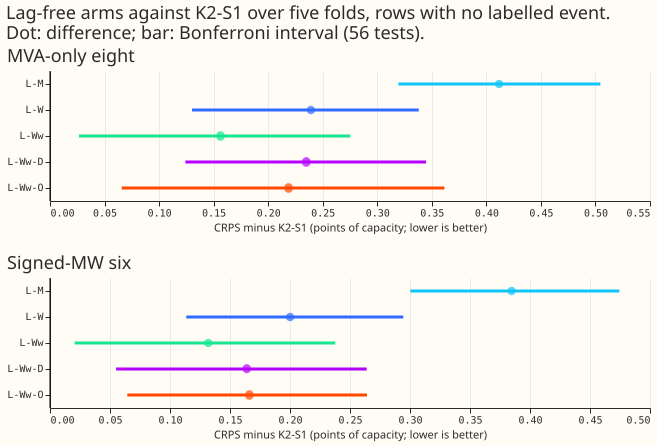
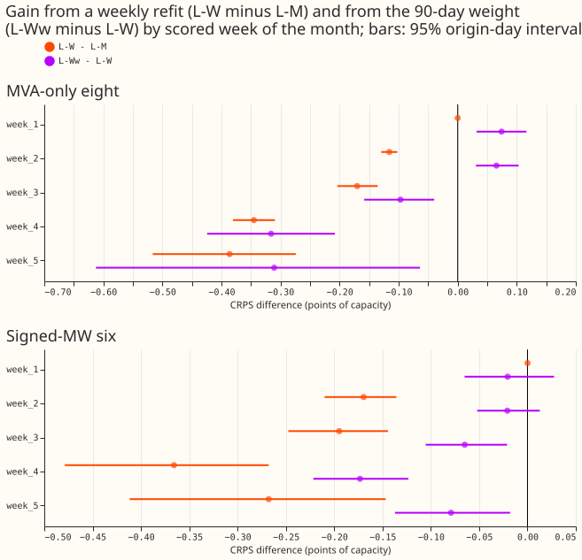
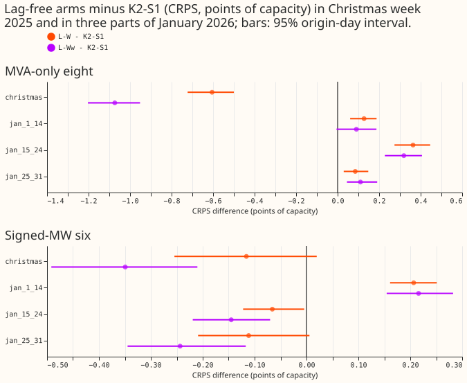
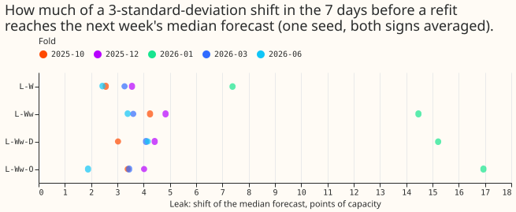
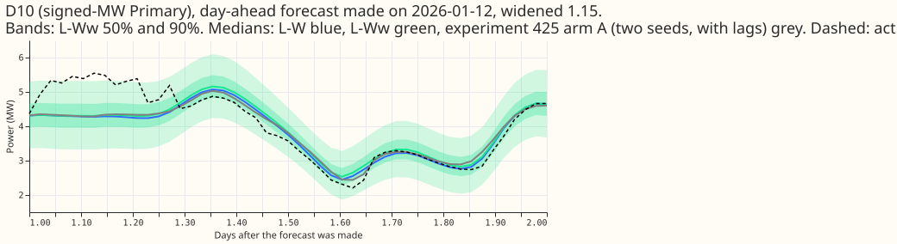
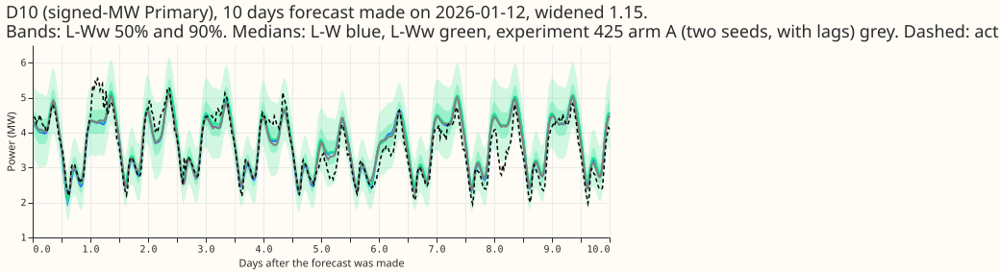
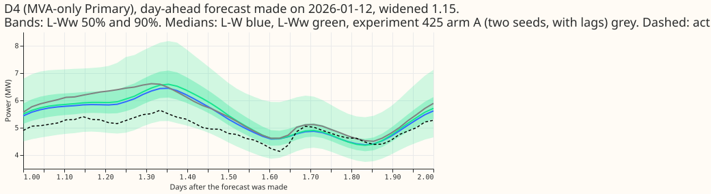
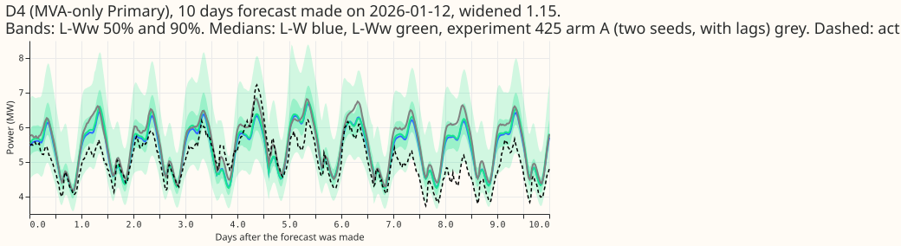
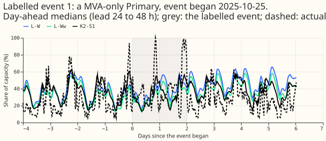
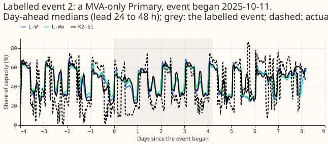
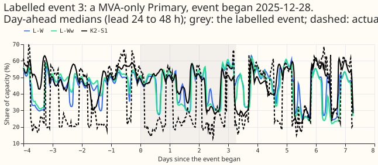
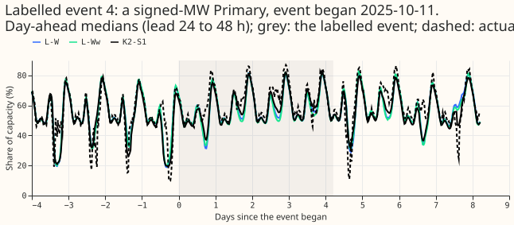
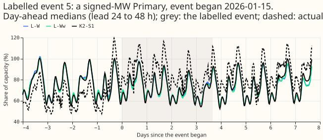
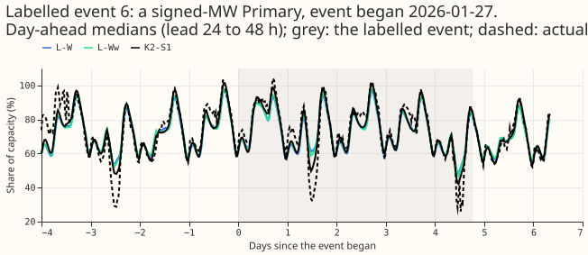
Results
- Setup. Seeds 0 and 1 (L-Ww-D and L-Ww-O seed 0 only); widening 1.15; rows of experiment 470
(
experiment_470_intersection_v1, 572,041 half-hours at the eight and 322,323 at the six); folds 2025-10, 2025-12, 2026-01, 2026-03, 2026-06; cleaned data; the D15 and D18 start cut. Forecasts reach 240 hours, so the page scores leads up to 10 days; the row set excludes longer leads. - Minimum detectable effect from this experiment's own two seeds. 0.164 points at the eight and 0.123 at the six, not the 0.086 and 0.170 in the plan (those came from experiment 494, with other arms). Bonferroni count 28 CRPS tests (56 with q99 pinball loss).
- CRPS contrasts (points; Bonferroni 95% interval; negative favours the first arm).
| Contrast | Eight | Six |
|---|---|---|
| L-W minus L-M | -0.173 [-0.219, -0.133] | -0.185 [-0.246, -0.132] |
| L-Ww minus L-W | -0.083 [-0.168, -0.012] | -0.068 [-0.104, -0.031] |
| L-Ww-D minus L-Ww | +0.079 [+0.044, +0.117] | +0.032 [+0.005, +0.062] |
| L-Ww-O minus L-Ww | +0.062 [+0.004, +0.118] | +0.034 [-0.019, +0.087] |
| L-M minus K2-S1 | +0.412 [+0.319, +0.505] | +0.385 [+0.300, +0.474] |
| L-W minus K2-S1 | +0.239 [+0.130, +0.338] | +0.200 [+0.114, +0.294] |
| L-Ww minus K2-S1 | +0.156 [+0.027, +0.275] | +0.132 [+0.020, +0.238] |
| L-Ww minus A-pool | +0.238 [+0.157, +0.322] | +0.098 [+0.031, +0.174] |
- Absolute CRPS (points). Eight: L-M 5.175, L-W 5.003, L-Ww 4.920, L-Ww-D 4.998, L-Ww-O 4.982, K2-S1 4.763, A-pool 4.682. Six: L-M 3.807, L-W 3.623, L-Ww 3.555, L-Ww-D 3.587, L-Ww-O 3.589, K2-S1 3.423, A-pool 3.457.
- Week of the month (figure 2). The weekly gain is zero in week 1, because the first weekly fit is the monthly fit, and grows afterwards: at the six -0.170, -0.195, -0.366, and -0.268 points in weeks 2 to 5, and at the eight -0.116, -0.170, -0.345, and -0.386.
- Christmas week and January (report only; figure 3). From 22 to 31 December 2025, L-Ww scored 4.332 at the eight and 2.861 at the six, against 5.406 and 3.210 for K2-S1 (-1.074 and -0.349). From 25 to 31 January 2026 at the six, L-Ww scored 4.027 against 4.271 for K2-S1 (-0.244). From 1 to 14 January it scored 0.090 (eight) and 0.216 (six) points behind. One Christmas week is a single event, and the noise floor of a single Christmas week given in the brief is about 0.26 (six) to 0.27 (eight) points, so the Christmas result is suggestive only.
- Injected-shift leak (descriptive; one seed, 5 folds, both signs). The shift is 3 times the standard deviation of a Primary's 7-day mean target (on average 31 to 36 points of capacity), added to the 7 days before the refit. The next week's median moves by this many points of capacity (share of the shift in brackets): L-W 3.84 (11%), L-Ww 6.11 (18%), L-Ww-D 6.18 (18%), L-Ww-O 5.94 (17%). The leak is largest in 2026-01 (7.4 for L-W, 14.5 for L-Ww, 15.2 for L-Ww-D, 16.9 for L-Ww-O). L-Ww-D and L-Ww-O do not cut L-Ww's leak by the pre-registered 30%.
- Learned outlier weight of L-Ww-O. The mean weight is 0.020 for rows with no labelled event, 0.020 inside labelled events, 0.020 on cold winter nights (48,742 rows), and 0.019 in Christmas week. The component does not pick out events or weather; the prior pins it near the same value everywhere.
- Tails (widened 1.15, metered actuals). On rows with no labelled event at the six, q99 coverage is 0.989 (L-W and L-Ww), 0.985 (L-Ww-D), 0.982 (L-Ww-O), 0.978 (L-M), and 0.979 (K2-S1). On event rows q99 coverage is poor for every arm (0.77 for K2-S1, 0.79 to 0.87 for the lag-free arms). no arm has a q99 pinball loss more than 0.02 points worse than K2-S1 at the six (L-W and L-Ww-D are 0.020 and 0.021 better), but L-Ww is 0.036 worse than A-pool at the eight.
- Cold winter nights and horizon bands. On cold winter nights at the eight L-Ww scores 4.60 (K2-S1 4.61); at the six 6.80 (K2-S1 6.86). In the 12 to 36 hour band L-Ww scores 4.55 (eight) and 3.81 (six), against 4.48 and 3.86 for K2-S1.
- Avoidable-curtailment cost at the six. At f = 0.9, L-Ww 0.95 [0.15, 2.29] against K2-S1 1.90 [0.24, 4.89]; at f = 0.75, 5.96 against 8.43; at f = 0.5, 22.26 against 26.94. Every difference to K2-S1 has an interval that includes zero, so the lag-free arms are not shown worse.
- D15 and D18 (report only). L-Ww scores 11.19 against 11.53 for K2-S1.
- Event rows (figure 6). Metered event rows at the six: L-Ww 7.776, L-W 7.624, L-Ww-D 8.071, L-Ww-O 7.875, K2-S1 7.554. NRA-corrected rows: L-Ww 22.78, K2-S1 22.62.
- Serving workload per arm. 1 network per serving pass for every lag-free arm. Monthly refit: about 1 fine-tune per month; weekly refit: about 5 per month (3 to 9 seconds each on one GPU). No stored tables are added.
Checks
- Pre-registered rules.
- Weekly beats monthly: pass (point estimates -0.173 and -0.185, intervals exclude zero, q99 pinball loss within +0.02).
- A recency weight helps: fail (gains of 0.083 and 0.068 are below the minimum detectable effects of 0.164 and 0.123, and the leak is 2.3 points larger, not at most 0.05).
- A lag-free candidate exists: not within the pre-registered 0.03 of K2-S1 (gap 0.132 at the six, 0.156 at the eight); the gap is narrowed, not closed, and the line is not closed because the weekly arms score better than K2-S1 in some weeks.
- L-Ww-D or L-Ww-O worth adopting: fail for both (the leak did not fall by 30%).
- Triggers. Trigger 2 (a prediction contradicted) fired: the weekly gain was 2 to 4 times the upper end of the predicted range (0.08 at the six, 0.05 at the eight). A Sonnet audit re-derived the two headline contrasts from the raw forecasts (-0.1846 and -0.1725; -0.0681 and -0.0829), found L-M equal to experiment 448's L0PT forecasts to 9.5e-6, found no refit using later data than its cutoff, and found the first week of L-M and L-W identical to zero. Nothing in the audit explains the gains away.
- Median minus mean forecast per Primary (checks). The median is below the mean at the eight for every arm (-0.38 to -0.61 points), as in earlier experiments.
- Conditional half-life sweep. Not run: L-Ww did not beat L-W by the minimum detectable effect.
- Seed 1 for L-Ww-D and L-Ww-O. Not run: both failed the leak rule.
Caveats
- The cause of the weekly gain is not isolated. L-M minus K2-S1 does not grow through the month (at the six 0.46, 0.37, 0.41, 0.37, and 0.16 points in weeks 1 to 5), so the lag-free network does not age faster than the lagged one; a weekly refit may simply beat any monthly refit. No arm refits K2-S1 weekly.
- The 90-day weight helps unevenly. At the eight L-Ww minus L-W is about +0.07 in weeks 1 and 2 and -0.32 in week 4, and positive in 2026-06.
- Intervals are origin-day block bootstraps and ignore dependence across days of one fold; five folds is few. The Christmas and January results are two folds.
- NGED's event labels are incomplete and are hindsight labels. "Rows with no labelled event" may hold unlabelled events, and event counts are lower bounds. L-Ww-D validates on a different early-stopping set than L-Ww.
- The Beta(3, 97) prior is applied once per row in the fine-tune loss only, so it pins the outlier weight near 0.02 on every class of row; the arm tests that setting and not an outlier component in general.
- The scorer widens only q01, q05, q95, and q99 about the median; widening all 11 levels changes the contrasts by about 0.01 points.
- The stress run is one seed and one refit week per fold; its leaks are descriptive.
- Forecasts reach 240 hours only; the saved networks allow a later 14-day pass.
- Reviews: one Sonnet plan review, one Sonnet code review before the first fit, one Sonnet audit of the headline contrasts, a Sonnet numbers review, and Sonnet prose reviews.
What to try next
- Refit K2-S1 weekly as well, to separate "weekly refits help any network" from "weekly refits help only a lag-free network".
- Test the weekly lag-free network and K2-S1 over a full winter, including a second Christmas.
- Repair the hindsight labels in the fine-tune targets (untested here) rather than dropping rows.
Plan
Question
Can a demand network that reads no lagged power at forecast time, pretrained once on ERA5 and CAMS rows and then fine-tuned every week or every month on ENS rows, match K2-S1 and A-pool on rows with no labelled event while avoiding the load-shift problem entirely?
The gap to close is 7% to 10% at the signed-MW six. On ordinary rows the lag-free average of experiment 472 scores 3.622 and a single-seed lag-free network about 3.71, against 3.387 for K2-S1: 0.23 to 0.32 points. (The brief's earlier "4% to 5%" is not what experiment 482 shows.)
Base network (checked before this plan)
- L0PT is arm A minus the lag columns. Experiment 448's
L0PTweights and experiment 425's arm A are the samePlainMdnof experiment 397 (settingg09: hidden 64, 2 layers, 3 components, dropout 0.1, 8-wide Primary embedding), built from the samesummaryfeature scheme. Arm A takes the scheme's 46 columns plus the embedding (first-layer weight 64 x 54). L0PT takes the 37 columns left after dropping the scheme's nine lag columns (lag_origin,lag_day,lag_week, their_missingflags, and their_agecolumns) plus the embedding (64 x 45). Every other weight has the same shape. Arm A's own pretrained weights have the lag columns and do not load. - Pretraining rows. L0PT folds exist for 2025-10, 2026-01, 2026-03, and 2026-06 (5 seeds each).
Fold 2025-12 is pretrained here (seeds 0 and 1, about 46 s each) with experiment 448's
pretrain_rowsand loop.
Design
- Folds and rows. The five experiment 449 folds (2025-10, 2025-12, 2026-01, 2026-03, 2026-06) on
the rows of
experiment_470_intersection_v1. July 2026 is unused. The D15 and D18 start cut (2025-03-01) and the flagged exact-zero drop apply (cleaned data). Reported per fold. - Standing practices followed. Cleaned data; D15 and D18 cut; saved networks; stored forecasts reused as references; tails and curtailment cost; example forecasts and the 14-day plot; load-shift event plots (at least 6, both metering groups); the process order of the ml-experiment skill. Not followed: the monthly-only rule, because the question is the refit cadence.
- Arms (pooled over the 16 Primaries; two seeds, 0 and 1; widened by 1.15 unless said):
- L-M: fine-tuned monthly with experiment 425's recency weight,
0.5 ** (age_days / 182.6). The queue-order check found that 425's recipe already weights rows with a half-life of 182.6 days, so the "unweighted" arms of the brief are weighted at 182.6 days. - L-W: fine-tuned weekly with the same 182.6-day weight.
- L-Ww: fine-tuned weekly with a 90-day half-life. L-Ww against L-W is the one recency test. L-Mw (monthly, 90 days) is dropped: experiment 407 tested a 0.25-year half-life with the pooled network (+0.073 at the six, +0.025 at the eight, not better).
- L-Ww-D: L-Ww on rows minus the half-hours inside labelled events (see "Appended arms").
- L-Ww-O: L-Ww with a latent outlier component (see "Appended arms").
- Stress runs of L-W and L-Ww (see "Stress run").
- L-M: fine-tuned monthly with experiment 425's recency weight,
- Weekly refit rule and leak check. For scored month M the refits are at 00:00 UTC on days 1, 8,
15, 22, and 29 of M (five refits; the last covers the days left in the month). Each refit
fine-tunes the month's L0PT weights on rows with valid time at most the refit minus 3.5 h and
origin at most the refit (experiment 425's
build_ens_foldrule, with the refit set to the week's first origin), over the 24 months before the refit. The early-stopping held-out weeks (the absolute weeks of experiment 422'spurge_masks) must end before the refit as well. The forecast of a scored week uses only its own refit. Age in the recency weight is measured from the refit. A script prints, for every refit, the latest training valid time and origin, the number of rows past the cut (it must be 0), and the number of early-stopping rows left, and does the same for the pretraining rows of each fold (experiment 448's rule: valid time at most the month's refit minus 3.5 h), before any score is computed. Week 1 of each month is the monthly refit, so L-M and the first week of L-W share one fit per seed. The month's standardiser, target mean and standard deviation, and spread table are fitted once at the monthly refit and kept for the month's weekly refits, so the pretrained weights see the input scale they were pretrained on. - Fits (counted per arm). Seeds 0 and 1 unless stated; the stress runs use refit week 3 of each fold, both signs.
| Arm | Fine-tunes |
|---|---|
| L-M and L-W, monthly refit (shared with L-W week 1) | 5 folds x 2 seeds = 10 |
| L-W, weeks 2 to 5 | 5 x 4 x 2 = 40 |
| L-Ww (week 1 differs from the monthly fit: 90-day weight) | 5 x 5 x 2 = 50 |
| L-Ww-D, seed 0 | 5 x 5 = 25 |
| L-Ww-O, seed 0 | 5 x 5 = 25 |
| Stress: L-W, L-Ww, L-Ww-D, L-Ww-O (seed 0, 5 folds, 2 signs each) | 4 x 10 = 40 |
| Total | 190 |
Pretrainings: 2 (fold 2025-12, 3 components, seeds 0 and 1) plus 5 (4 components, seed 0, all five
folds) = 7, at about 46 s each. About 190 x 31 s + 7 x 46 s = about 1.7 GPU-hours. Seed 1 of a
passing L-Ww-D or L-Ww-O (about 25 more fits each, up to 0.4 GPU-hours) is conditional on the
rules below. One GPU process under 8 GB (MemoryMax=8G, OMP_NUM_THREADS=1) and one feeder core.
Each month's rows are built once and masked by cutoff. The exact count is reported to the manager
before the fits run.
- Control of L-Ww-O. The seed-0 control is L-Ww seed 0 fine-tuned from the 3-component L0PT
weights (the 2025-12 fold pretrained here with the same recipe). It has no outlier component; the
only difference from L-Ww-O is the head.
- References (stored, no refit): K2-S1, the lag-free average of experiment 472, A-pool (five
seeds, and its two-seed version), BG2, manual_heuristic, and climatology.
Stress run
- The shift. 3 times the standard deviation of a Primary's 7-day mean target (printed per Primary, computed from cleaned data before the refit only), added to the training target of the 7 days before the refit, excluding the early-stopping weeks, both signs. One refit week per fold (the week after the injection, chosen before any score is read as week 3 of each month), one seed. L-W and L-Ww (and L-Ww-D, L-Ww-O) are refit on the same injected rows, with matched uninjected controls from the main run.
- What it measures. The leak is the sign-adjusted bias of the following week's median forecast against the matched uninjected fit (injected sign times the change in the median, in points of capacity, averaged over the two signs), with the CRPS change beside it. The stress run has one seed and 5 weeks, so the minimum detectable effect of the scored months does not apply: the stress run is descriptive, with the five fold-paired values shown. The effective weight of 7 days in a window of about 730 is small (about 5% at the 90-day half-life), so the leak may fall below the minimum detectable effect. A lag-free network is not exposed to a bad lag at forecast time; the training targets are exposed, and this arm measures that.
Appended arms
- L-Ww-D (drop labelled events). Fine-tune on L-Ww's rows minus the half-hours inside NGED's labelled events, padded by 2 days either side. An event is known at a refit if its start is at or before the refit; only such events count: an event that started before the cutoff and ends after it is dropped from its start to the cutoff, with no use of its future end, and the 2-day pad applies only before the cutoff. The rows leave the training set and the early-stopping week alike. NGED's labels are hindsight labels, unavailable in real time at a weekly refit, and they are incomplete, so unlabelled events stay in. Report the share of rows dropped per fold and, per scored week, whether it contains or follows an event. The injected shift is unlabelled by construction, so L-Ww-D cannot drop it.
- L-Ww-O (latent outlier component, dropped at serving). A fourth Gaussian component whose mean is the mixture's mean (weights-averaged main mean), whose scale is the widest main scale times (3 + softplus(learned offset)), and whose weight has a Beta(3, 97) prior (mean 3%) that enters the fine-tune loss only. The fourth component changes the output head, so the arm is re-pretrained with 4 components (5 folds, seed 0) and L-Ww gets a seed-0 control pretrained the same way. At serving the outlier component is dropped and the main weights are renormalised. The 1.15 widening no longer applies: the widening sweep 1.0, 1.05, 1.10, and 1.15 runs per arm, with q95 and q99. The learned outlier weight is reported by row class (rows with no labelled event, rows inside labelled events, cold winter nights with their count, Christmas week).
- Seeds. Seed 0 is a screen for L-Ww-D and L-Ww-O. Any arm that passes runs at seed 1 (about 25 more fits) before an adoption claim. Comparisons are paired with seed-0 L-Ww and with the two-seed L-Ww; the minimum detectable effect comes from the two-seed arms and is indicative only.
- Widening. All arms are scored at 1.0, 1.05, 1.10, and 1.15, and the headline uses 1.15 for every arm. No factor is chosen from the scored data; L-Ww-O is additionally shown at the factor that gives it the lowest CRPS, labelled post hoc.
- Held, not run: a two-sided step repair of the training targets (held until experiment 507 reports), a penalty holding the fine-tune near the pretrained weights, and a robust 28-day median level adjustment.
Scoring
- Scorer. The experiment 470 scorer, tail script, and curtailment script pointed at this folder, as in experiment 494. Predictions are raw quantiles in experiment 425's seed-prediction layout, widened by 1.15 (L-Ww-O: by the sweep).
- Minimum detectable effect, stated before any score: 0.086 at the eight and 0.170 at the six (2 seeds, 5 folds, experiment 494), recomputed from this experiment's own seed spread and printed.
- Headline contrasts: each arm minus K2-S1 and minus A-pool; L-W minus L-M; L-Ww minus L-W; on rows with no labelled event, at the signed-MW six and the MVA-only eight separately (CRPS in points of effective capacity, days 1 to 10 and the 12 to 36 hour band). Bonferroni count 28 CRPS tests (56 with q99 pinball loss): 14 contrasts x 2 groups, namely L-M, L-W, L-Ww, L-Ww-D, and L-Ww-O each minus K2-S1 and minus A-pool (10), plus L-W minus L-M, L-Ww minus L-W, L-Ww-D minus L-Ww, and L-Ww-O minus L-Ww (4). The horizon bands, event rows, cold nights, and stress runs are descriptive and not counted. The row set is the intersection of experiment 470; rows that the lag-free networks have and the references lack are counted and reported separately. The weekly-against-monthly contrast is reported as a 2-seed contrast with a fold interval beside the origin-day interval.
- Also: real events (NRA-corrected actuals headline, metered secondary; the events of experiments 435 and 482, 184 labelled events in the scored months) with the event count and the minimum detectable effect, including weeks that contain or follow an event; cold winter nights; Christmas week (report-only); q01, q05, q95, q99 coverage and pinball loss; the widening sweep; avoidable-curtailment cost at f = 0.9, 0.75, and 0.5 at the six; D15 and D18 report-only. NGED's labels are incomplete, so rows with no labelled event may hold unlabelled events.
- Serving cost per arm: networks per serving pass (1), fits per month (about 1 for monthly, about 5 for weekly), stored tables (none), and the added work of a weekly refit.
Pre-registered rules
- This experiment is underpowered by design: the limits below sit under the minimum detectable effect, so the expected outcome is "not shown", and a pass can only read "interval excludes zero" or "not shown worse".
- Weekly beats monthly if L-W minus L-M at the eight or at the six has a Bonferroni interval that excludes zero with a point estimate at most -0.03, q99 pinball loss within +0.02, and no worse on labelled-event rows beyond the minimum detectable effect. Otherwise stop; keep monthly.
- A recency weight helps if L-Ww beats L-W by at least the minimum detectable effect of a group (0.086 at the eight or 0.170 at the six, that group passing) and the L-Ww stress leak is no more than 0.05 points of capacity larger than L-W's (descriptive). Otherwise the 90-day weight is not adopted.
- A lag-free candidate exists if the better of L-W and L-Ww by six-group CRPS (a choice made after the scores, and counted as one) has a point estimate within 0.03 of K2-S1 on rows with no labelled event at both groups ("not shown worse", not equivalent) and a point estimate not worse than K2-S1 on labelled-event rows. K2-S1 has no stress run here, so its stored injected-lag scenarios from experiment 482 are the reference. A gap between 0.03 and 0.1 reads "narrowed, not closed". If so, say it has 1 network per serving pass and no load-shift exposure at forecast time, and leave the first-release choice to the maintainer. If no arm gets within 0.1 of K2-S1, say the lags carry information a refit cannot replace at these leads, and close the line.
- L-Ww-D or L-Ww-O is worth adopting over L-Ww only if the injected-shift leak falls by at least 30% of L-Ww's leak (descriptive, five fold-paired values shown), rows with no labelled event stay within 0.03 of L-Ww, cold winter nights are no worse than +0.05 against L-Ww, and q99 pinball loss stays within +0.02. If L-Ww-O's learned outlier weight on cold winter nights is more than twice its weight on other rows with no labelled event (leave-one-fold-out, with a count), the component is absorbing weather and the arm fails. If both arms fail to cut the leak by 30%, close them and name the hindsight target repair as untested.
Caveats named in advance
- Interim numbers are labelled "interim, unaudited" until the audit triggers have run. If L-Ww or L-Ww-D beats its twin by the minimum detectable effect, a 30 and 180 day half-life sweep runs as an addition. Intervals are month-block bootstraps with Bonferroni correction; seeds and rows are equal across arms. Titles say "load-shift", never "switching". The merge follows the skill's rule.
- The Beta(3, 97) prior is applied once per row, so it acts as a per-row regulariser that pins the outlier weight near 3%; early stopping scores the three served components alone. NGED's labels are hindsight labels, sharper than a live detector, and L-Ww-D validates on a different set than L-Ww.
- Weights and standardisers of the pretraining are the month's, not refreshed per week.
- The 2025-12 fold has no stored L0PT weights; the 2-seed pretraining here is new.
- Lag-free rows need no lag-age cut, so more rows survive than in experiment 425's arm A; scoring uses the intersection and the page prints both row counts.
- Intervals ignore dependence across days of one fold.
Series
Neural simplification series; runs alongside experiment 507 (writes only to its own folder).